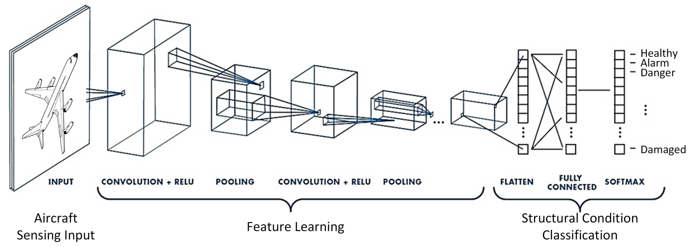
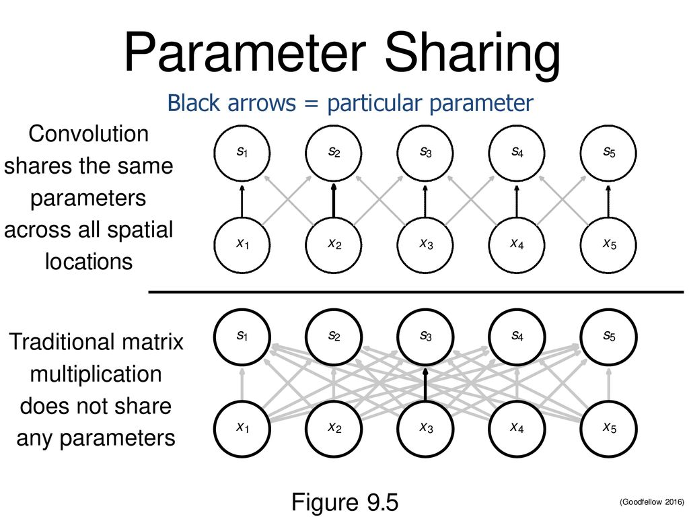
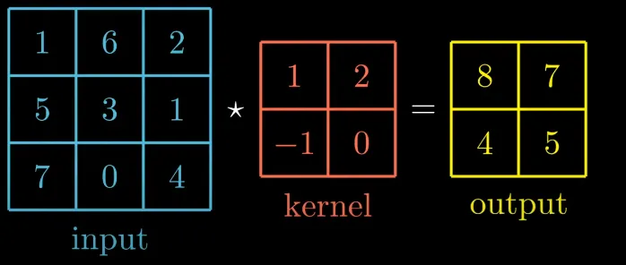
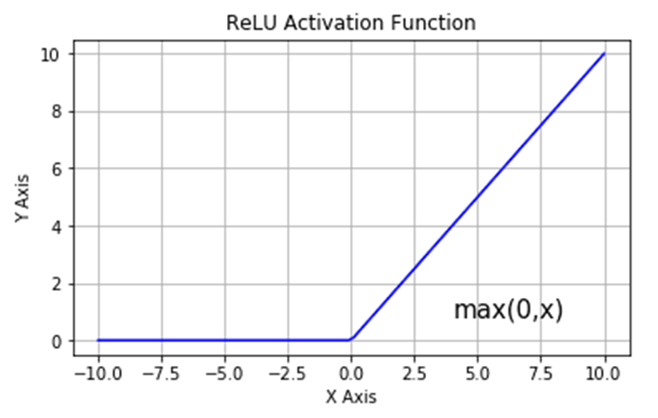
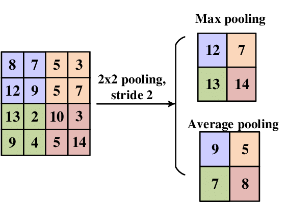

Convolutional Neural Networks (CNNs) represent a revolutionary approach in deep learning that has transformed computer vision and image processing. Inspired by the organization of the animal visual cortex, CNNs have become the cornerstone of many modern applications including image recognition, object detection, facial recognition, and medical image analysis.
The power of CNNs lies in their ability to automatically learn hierarchical patterns in data, starting from simple features like edges and textures to more complex structures like shapes and objects. Unlike traditional neural networks, CNNs maintain spatial relationships in data, making them particularly effective for processing grid-like structures such as images.

Figure 1: A Convolutional Neural Network
2. What Are Convolutional Neural Networks?
Convolutional Neural Networks (CNNs) are a class of deep learning models specifically designed for processing grid-like data, such as images. At their core, CNNs are stacks of convolutional operations interspersed with non-linear activation functions and pooling layers. These layers work together to extract hierarchical features from the input data, enabling the network to learn spatial patterns efficiently.
Before we explain the key components of a CNN, I believe it's really important that we understand some core concepts of CNNs which are often overlooked in courses, and other blogs.
Key Concepts
Parameter Sharing:
Before CNNs, fully connected neural networks(MLPs) were used for image processing, but they had two major problems:
Too many parameters:
Fully connected layers treats each pixel independently, meaning that a simple 32×32×3 image would have 3072 input neurons. If the first hidden layer has 1000 neurons, that results in about 3 million parameters !
Loss of Spatial Structure:
MLPs do not capture the spatial relationships between nearby pixels, treating a pixel at (2, 3) as completely independent from one at (2, 4). But human vision does not process each pixel uniquely. We are naturally able to perceive spatial relationships between pixels, our brain groups nearby pixels to recognize edges, shapes, and textures. We don't process each pixel separately;instead, we recognize patterns that emerge from neighboring pixels.
Instead of learning a unique weight for each input pixel(as in an MLP), CNNs reuse the same set of weights (a kernel or filter) across the entire image. This means that a small kernel slides over the image and applies the same weights at each position.
The same feature detector(kernel) is applied everywhere, meaning the same set of parameters detects the same feature across the image.
We will have a better understanding of these operations in the next section when we will talk about Convolutions

3. Key Components of a CNN
a) Convolutional Layers
The convolution operation is the backbone of CNNs. It involves sliding a small filter (kernel) over the input image and computing the dot product between the filter and the input region.
Let's see how this works with an example!

The output matrix is obtained by sliding the kernel over the input one pixel at a time (stride = 1) and computing the dot product between the filter and the input region corresponding. Let's see how this is done.
In the first step the input region is [[1, 6], [5, 3]] and the kernel is [[1, 2], [-1, 0]], the result when we compute the dot product is:
1 * 1 + 6 * 2 + 5 * (-1) + 3 * 0 = 8 . This process repeats itself for each region of the input image.
Key Parameters:
Kernel Size: The size of the filter (e.g., 3x3, 5x5).
Stride: The step size by which the filter moves across the input (e.g., stride=1 moves the filter one pixel at a time).
Padding: When an image passes through convolutional layers, its spatial dimensions typically shrink. As an illustration, you can look at our previous example. So after each conv layer, the size of our image usually decrease. However, shrinking the image too quickly can cause problem like loss of information. The network might also suffer to learn features at the edge effectively.
To address these issues, we use padding. Padding involves adding extra pixels(usually zeros) around the border of the input image before applying the convolution operation. It helps us capture edge information, preserve spatial dimensions, and thus enable deeper networks.
Convolution Visualization
Convolution Visualization
Input (7, 7)
After-padding (7, 7)
Output (6, 6)
Hover over the input matrix to change kernel position
b) Non-linear Activation Functions
After the convolution operation, a non-linear activation function is applied to introduce non-linearity into the model. The most common activation function is ReLU (Rectified Linear Unit)
Non Linearities create non linear decision boundaries, this ensure the output cannot be written as a linear combination of the inputs. If non linear activation was absent, deep CNN architectures would be equivalent to a single conv layer, which would not perform as well. I have also learned when i was reading AlexNet paper that ReLU is also faster than other non-linearities.
ReLU(x) = max(0, x)

c) Pooling Layers
Pooling layers reduce the spatial dimensions of the feature maps, making the network more computationally efficient and invariant to small translations. They operate on small regions of the feature map (e.g., 2x2 or 3x3 windows) and apply a pooling operation to summarize the information in that region.
Types of Pooling:
Max Pooling: Takes the maximum value in each pooling region.
Average Pooling: Takes the average value in each pooling region.
For example:

Here the pooling region is 2x2 we apply the operation each time with a stride of 2. For the Max Pooling we take the maximum of the pooling region, for average we take the average.
d) Fully Connected Layers
After several convolutional and pooling layers, the output is flattened and passed through one or more fully connected layers. These layers combine the extracted features to produce the final output (e.g., class probabilities, continuous value).
4. Exercise: Calculating Output Dimensions in AlexNet
Let’s walk through an example to understand how the dimensions of an input image change as it passes through a CNN. Consider AlexNet, a classic CNN architecture:
AlexNet Architecture:
Input: 227x227x3 (height x width x channels)
Conv1: 96 filters of size 11x11, stride=4, padding=0
MaxPool1: 3x3, stride=2
Conv2: 256 filters of size 5x5, stride=1, padding=2
MaxPool2: 3x3, stride=2
Conv3: 384 filters of size 3x3, stride=1, padding=1
Conv4: 384 filters of size 3x3, stride=1, padding=1
Conv5: 256 filters of size 3x3, stride=1, padding=1